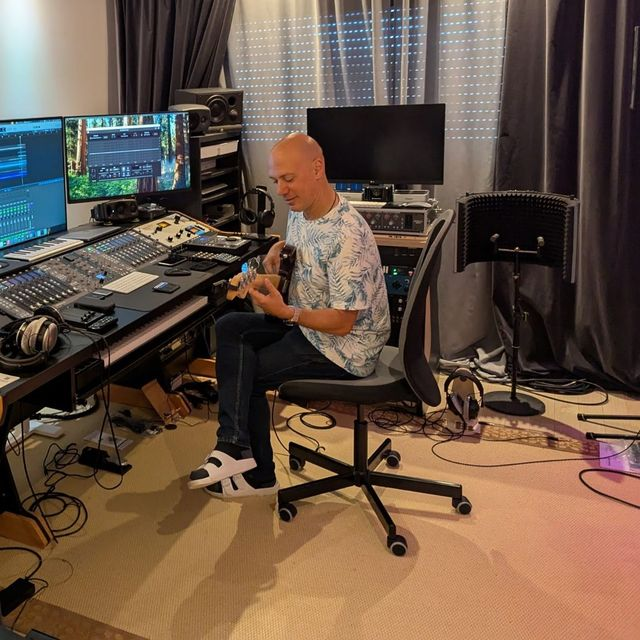

Composer · multi-instrumentalist · music producer6
Gabriel
DaCruz
He can take a song, write it out for a full orchestra, and then stand in front of that orchestra.1
Seven compositions on Patreon, a suite in movements on Spotify, an album he composed and conducted, film and TV cues on SoundCloud, and videos from the studio and the orchestra on YouTube. Below: what one of those videos shows, frame by frame, and how he filmed it with three old iPhones.

01The video, explained
Separate Ways, frame by frame
Gabriel posted a short video of the synth part from Journey's Separate Ways (Worlds Apart), the song that opens the album Frontiers, released as a single in January 1983. Most people who watch it will not know what they are seeing. The people who would want to know, other producers and composers, get no explanation in the post. So he explained it, by voice, and every claim was checked.2
"I put this video to show how it works."
The signal chain
Why the keyboard does not lag
Bluetooth headphones stream buffered audio, which is where their delay comes from. MIDI over Bluetooth Low Energy sends only small note messages, and its specification requires the connection to update every 15 milliseconds or less. In Gabriel's words, "there's a different protocol if you want to connect MIDI."2
What the checking corrected
He flagged both himself: "They used that Prophet 5, I think. I have to check that out."2
- The record:
Prophet-5the album's credits list a Roland Jupiter-8 for the opening track. - His synth: the Pro-800 copies the
Prophet-5Prophet-600, a later and cheaper Sequential instrument.
02How it was filmed
One player, three old iPhones, no crew
The three frames are one take. He bought two iPhone 12s and an iPhone 13 second-hand, "because they were cheaper, and I just needed the camera", and connected them wirelessly to an iPad running Final Cut Pro. The feature is Live Multicam, which Apple released on 20 June 2024 in Final Cut Pro for iPad 2.0, with a free app for the phones, Final Cut Camera.3
"When I discovered this, I was blown away."
How it works
- Up to four angles. The iPad's own camera can be one of them.
- Live and in sync. The iPad shows every angle as it happens and controls each camera's settings.
- Full quality kept. Each phone records its own file, which transfers to the iPad afterwards.
- Finished on the Mac. The project moves to Final Cut Pro on the Mac for the edit.
Good for, in his words and his brother's: a musician's video like this one, an interview ("like a live TV situation"), a lesson or masterclass, a small live show.3
03The music
Compositions, a suite, an album, film cues, and the videos
A suite in movements, on Spotify
The tracks as numbered on his Spotify album: Sol, Mar and Lua are sun, sea and moon in Portuguese. The notes on the staff are decoration, not his melody. The album's title and year are to confirm. Also on Apple Music, under his name.1
Seven compositions, on Patreon
On record
On SoundCloud: themes and film cues
On video
Who played, where and when: added to each video once Gabriel confirms it. Every card opens his YouTube channel until each video has a direct link.5
04His path, as told by Dinis
The musician of the family
This is his brother's account, from the brief Dinis wrote for this site on 1 November 2026, recorded with Gabriel listening. Little of it is online anywhere else yet, and each detail waits for Gabriel's own interviews.1
- ComposerThe pieces on Patreon and Spotify, and songs of his own.
- ArrangerTakes a song and writes it out for a full orchestra.
- ConductorThen stands in front of that orchestra.
- ProducerProduces in the studio he built himself.
- Studio technicianA studio built around a Mac Studio, Logic and Pro Tools.
- TeacherSet up a music school; invites messages about lessons.
The road so far
- A band in the AlgarveGabriel, with Dinis on drums, about twelve gigs a week, "with a repertoire I still find hard to believe". Its name and years are to confirm
- Songs and a music schoolHe has written songs and set up a music school. to confirm
- A studio of his ownBuilt around a Mac Studio, Logic and Pro Tools, one that, in Dinis's words, "does more complicated things with technology than most of what I do".
- An orchestra for film music, in LisbonHe put together an orchestra that played film music live, in time with the films on a screen. Name, venue and dates to confirm
- Now: putting the work onlineCompositions on Patreon in 2025 and 2026, the suite on Spotify, and videos explained, starting with Separate Ways.
The band came first, in Dinis's telling; the steps after it have no dates yet and are not in a confirmed order.1
"As told by Dinis" marks his brother's words. The concert's name, venue and dates, the band's name and years, the school, and the award his Instagram mentions are all waiting for Gabriel, and appear here only when he confirms them.
05Learn with Gabriel
Lessons
Ask on Instagram
On Instagram, Gabriel invites messages about lessons. That is the place to ask.6
Topics on this page
In case it helps you say what you want to learn, these are the subjects this site shows him working with:
- Synths and sound: envelopes, chorus and delay
- Filming music from several cameras at once
- Arranging for orchestra
- Production in Logic and Pro Tools
07Listen and follow
Where to find him
- Instagram @gabrieldacruz_composer
- YouTube @gabrieldacruz_composer
- Patreon Compositions
- SoundCloud Themes and film cues
Also on Spotify and Apple Music, as Gabriel DaCruz.1
08Sources
Where every fact comes from
- Nothing here is written in Gabriel's voice. Quotes are his words as recorded and published in sources 2 and 3.
- No credit, date or number is added until he confirms it. Audience figures are left out on purpose.
- The same facts as Markdown, for people and AI agents: index.md, llms.txt and Use this site with AI.
- The drawings are illustrations made for this site from the descriptions in the sources, not photos and not his scores. The photos are Gabriel's own (source 8).